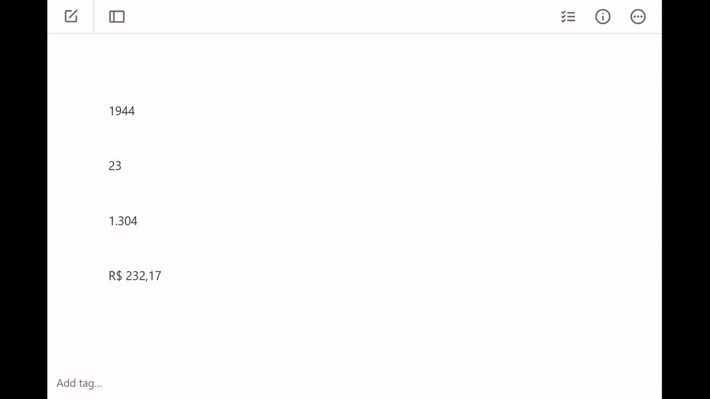

Ajuda - Extensor
Bem-vindo à página de ajuda do Extensor! Este utilitário foi desenvolvido para facilitar a conversão de números e valores monetários para a forma por extenso.

Como utilizar
- Selecione o número que deseja converter.
- Pressione as teclas Ctrl + Caps Lock e o número será convertido para sua forma por extenso.
- Se a seleção incluir o símbolo R$, o Extensor reconhecerá que se trata de um valor monetário e realizará a conversão adequada.
Execução e acesso
O Extensor roda a partir da bandeja do sistema (área de notificação) do Windows. Para acessar as opções:
- Clique com o botão direito no ícone do Extensor na bandeja do sistema.
- Selecione a opção desejada no menu que será exibido.
Iniciar com o Windows
Se desejar que o Extensor seja iniciado automaticamente ao ligar o computador, siga os passos abaixo:
- Clique com o botão direito no Extensor.exe e em "Criar atalho".
- Copie o atalho que você acabou de criar.
- Pressione Win + R para abrir a janela "Executar".
- Digite shell:startup e pressione Enter.
- Será aberta a pasta "Inicializar".
- Cole o atalho do Extensor que você criou anteriormente
Agora, o Extensor será executado automaticamente sempre que o Windows for iniciado.
Compatibilidade
Este software é exclusivo para os sistemas operacionais Windows 10 e Windows 11.
Dicas e solução de problemas
- Certifique-se de que o Extensor esteja em execução para que o atalho Ctrl + Caps Lock funcione corretamente.
- Verifique se a combinação de teclas não está sendo utilizada por outro programa.
- Se o Extensor não responder como esperado, tente reiniciá-lo a partir do ícone na bandeja do sistema.
Se você precisar de mais informações ou suporte, entre em contato com a equipe da Redasoft.